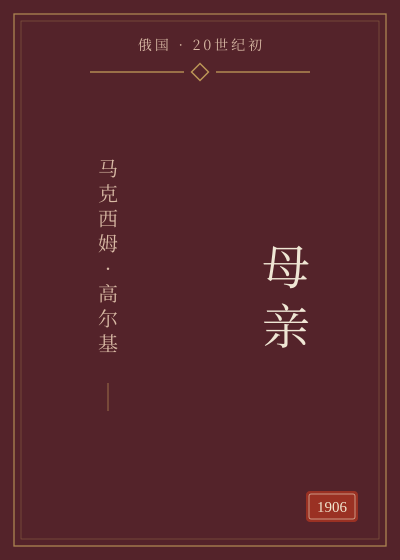
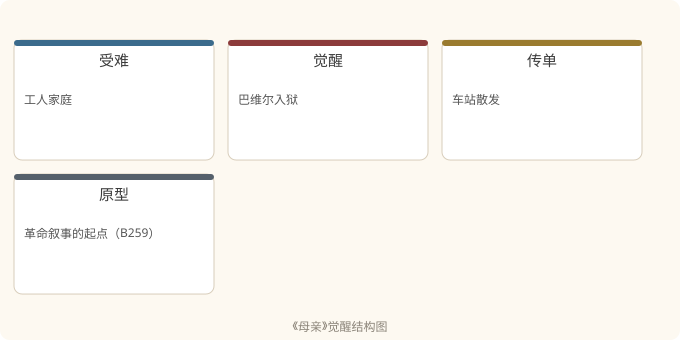

母亲
一、基本信息
| 作者 | 马克西姆·高尔基 |
|---|---|
| 成书/出版 | 1906年出版（Britannica：Mat (1906; Mother)） Maxim Gorky — Encyclopaedia Britannica（百科全书） |
| 国别/地区 | 俄国 |
| 时代 | 近代 · 20世纪初 |
| 体裁 | 长篇小说 |
| 语言 | 俄语 |

《母亲》觉醒结构图（主题·结构图）
二、创作背景
Britannica：'Mat (1906; Mother) is probably the least successful of the novels'——但'has considerable interest as Gorky's only long work devoted to the Russian revolutionary movement'（唯一 devoted to 革命运动的长篇——B259）。
改编（B259）：普多夫金1926年著名默片；布莱希特戏剧《母亲》（1930–31）。
三、内容脉络
巴维尔（Pavel）的工人革命活动与母亲尼洛夫娜的觉醒（人物名通说待核）。
五一游行与母亲的传单散发（通说待核）。
四、主要人物表
| 人物 | 身份 | 说明 |
|---|---|---|
| 尼洛夫娜 | 母亲 | 从受难到觉醒（通说） |
| 巴维尔 | 工人 | 革命者（通说待核） |
五、主题与艺术特点
- 革命叙事的原型文本（B259）。
- 母亲的觉醒：从受难者到传递者（通说）。
- 社会主义现实主义的先声（B259 语境）。
六、影响与评论
- Britannica：普多夫金1926年默片与布莱希特《母亲》（B259）。
Maxim Gorky — Encyclopaedia Britannica（百科全书） - 苏联文学中'母亲'形象的范式化（通说待核）。
Maxim Gorky — Encyclopaedia Britannica（百科全书）
七、阅读建议
难点
- 宣传文学的公式化——Britannica 亦称其'least successful'。
- 1900年代俄国工人运动背景。
- 《母亲》（人民文学出版社，通说待核）。
对照《铁水奔流》（周立波？——不：《创业史》柳青）：社会主义现实主义谱系。
八、待核实
- 巴维尔/尼洛夫娜人名核对。
- 1906年纽约出版（Appleton说）与柏林德译细节待核。
- '觉醒'章法与布尔什维克刊物连载待核。